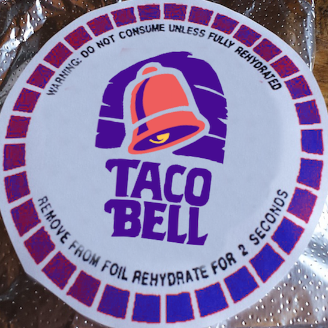

Project name

DEHYDRATED TACOS
Subheading
Donec id elit non mi porta gravida at eget metus. Maecenas faucibus mollis interdum.
Subheading
Morbi leo risus, porta ac consectetur ac, vestibulum at eros. Cras mattis consectetur purus sit amet fermentum.
Subheading
Maecenas sed diam eget risus varius blandit sit amet non magna.
Reviews

Biff Tannen
Dehydrated tacos are the best!! I bring a few of them in my pocket when I go to school. When I get hungry during the day, I just pop them into the rehydrator for a few seconds and voila!

Marty McFly
My mom makes these tacos for our whole family every Thursday. Everyone loves them and looks forward to to Taco Thursday the whole week!
Emmett Brown
I'm more of a dehydrated pizza kind of guy, but my dog Copernicus loves these things.